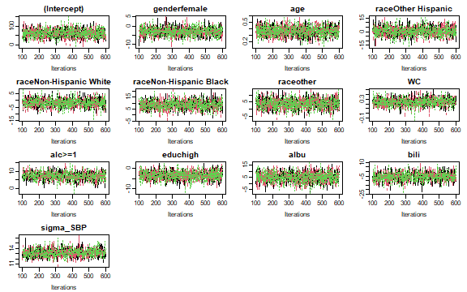
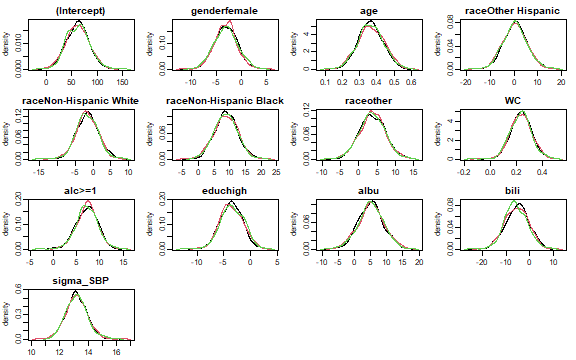

This vignette gives a first and very brief overview of how the package JointAI can be used. The different settings and options are explained in more depth in the help pages and other vignettes.
Here, we use the NHANES data that are part of the JointAI package. For more info on this data, check the help file for the NHANES data, go to the web page of the National Health and Nutrition Examination Survey (NHANES) and check out the vignette Visualizing Incomplete Data, in which the NHANES data is explored.
Fitting a linear regression model with JointAI is straightforward with the function lm_imp():
lm1 <- lm_imp(SBP ~ gender + age + race + WC + alc + educ + albu + bili,
data = NHANES, n.iter = 500)
#>
|
| | 0%
|
|* | 2%
|
|** | 4%
|
|*** | 6%
|
|**** | 8%
|
|***** | 10%
|
|****** | 12%
|
|******* | 14%
|
|******** | 16%
|
|********* | 18%
|
|********** | 20%
|
|*********** | 22%
|
|************ | 24%
|
|************* | 26%
|
|************** | 28%
|
|*************** | 30%
|
|**************** | 32%
|
|***************** | 34%
|
|****************** | 36%
|
|******************* | 38%
|
|******************** | 40%
|
|********************* | 42%
|
|********************** | 44%
|
|*********************** | 46%
|
|************************ | 48%
|
|************************* | 50%
|
|************************** | 52%
|
|*************************** | 54%
|
|**************************** | 56%
|
|***************************** | 58%
|
|****************************** | 60%
|
|******************************* | 62%
|
|******************************** | 64%
|
|********************************* | 66%
|
|********************************** | 68%
|
|*********************************** | 70%
|
|************************************ | 72%
|
|************************************* | 74%
|
|************************************** | 76%
|
|*************************************** | 78%
|
|**************************************** | 80%
|
|***************************************** | 82%
|
|****************************************** | 84%
|
|******************************************* | 86%
|
|******************************************** | 88%
|
|********************************************* | 90%
|
|********************************************** | 92%
|
|*********************************************** | 94%
|
|************************************************ | 96%
|
|************************************************* | 98%
|
|**************************************************| 100%The specification of lm_imp() is similar to the specification of a linear regression model for complete data using lm(). In this minimal example, the only difference is that for lm_imp() the number of iterations n.iter has to be specified. Of course, there are many more parameters that can (and sometimes should) be specified. In the vignette Model Specification, many of these parameters are explained in detail.
n.iter specifies the length of the Markov chain, i.e., the number of draws from the posterior distribution of the parameter or unobserved value. How many iterations are necessary depends on the data and complexity of the model and can vary from as few as 100 up to thousands or millions.
One important criterion is that the Markov chains need to have converged. Convergence can be evaluated visually with a trace plot.
traceplot(lm1)
The function traceplot() produces a plot of the sampled values across iterations per parameter. Different chains are represented by different colours.
When the sampler has converged, the chains show a horizontal band, as in the above figure. Consequently, when traces show a trend, convergence has not been reached, and more iterations are necessary (e.g., using the function add_samples()).
When the chains have converged, we can obtain the result of the model from the model summary.
Results from a model fitted with JointAI can be printed using summary():
summary(lm1)
#>
#> Bayesian linear model fitted with JointAI
#>
#> Call:
#> lm_imp(formula = SBP ~ gender + age + race + WC + alc + educ +
#> albu + bili, data = NHANES, n.iter = 500)
#>
#>
#> Posterior summary:
#> Mean SD 2.5% 97.5% tail-prob. GR-crit MCE/SD
#> (Intercept) 60.468 23.2853 14.5276 106.086 0.00933 1.012 0.0294
#> genderfemale -3.111 2.2576 -7.8405 1.301 0.16933 1.006 0.0258
#> age 0.361 0.0707 0.2250 0.496 0.00000 1.002 0.0267
#> raceOther Hispanic 0.606 5.0592 -9.1456 10.972 0.91733 1.009 0.0258
#> raceNon-Hispanic White -1.414 3.1084 -7.7117 4.190 0.66133 1.004 0.0258
#> raceNon-Hispanic Black 8.992 3.5962 2.1122 16.088 0.01200 0.999 0.0258
#> raceother 3.744 3.5421 -3.2277 10.644 0.30000 1.012 0.0258
#> WC 0.241 0.0829 0.0852 0.411 0.00133 1.013 0.0267
#> alc>=1 7.282 2.2352 2.8051 11.519 0.00133 1.014 0.0315
#> educhigh -3.390 2.1778 -7.6542 1.039 0.12533 1.001 0.0258
#> albu 5.312 4.2827 -3.0474 13.791 0.21600 1.009 0.0294
#> bili -5.456 4.9605 -14.8959 4.258 0.26000 1.005 0.0266
#>
#> Posterior summary of residual std. deviation:
#> Mean SD 2.5% 97.5% GR-crit MCE/SD
#> sigma_SBP 13.2 0.719 11.9 14.7 1.01 0.0273
#>
#>
#> MCMC settings:
#> Iterations = 101:600
#> Sample size per chain = 500
#> Thinning interval = 1
#> Number of chains = 3
#>
#> Number of observations: 186The output gives the posterior summary, i.e., the summary of the MCMC (Markov Chain Monte Carlo) sample, which consists of all chains combined.
By default, summary() will only print the posterior summary for the main model parameters of the analysis model. How one can select which parameters are shown is described in the vignette Selecting Parameters.
The summary consists of the posterior mean, the standard deviation, 2.5% and 97.5% quantiles of the MCMC sample, the tail probability, the Gelman-Rubin criterion for convergence and the ratio of the Monte Carlo error to the standard deviation of the posterior sample.
The tail probability is a measure of how likely the value 0 is under the estimated posterior distribution, and is calculated as \[2\times\min\left\{Pr(\theta > 0), Pr(\theta < 0)\right\}\] (where \(\theta\) is the parameter of interest).
In the following graphics, the shaded areas represent the minimum of \(Pr(\theta > 0)\) and \(Pr(\theta < 0)\):
The Gelman-Rubin1 criterion, also available via the function GR_crit(), compares the within and between chain variation. When it is close enough to 12, the chains can be assumed to have converged.
The Monte Carlo error is a measure of the error that is made because the estimate is based on a finite sample. It can also be obtained using the function MC_error(). Ideally, the Monte Carlo error should be small compared to the standard error of the posterior sample. The values shown in the model summary are the Monte Carlo error divided by the posterior standard deviation.
In the model summary, additionally, some important characteristics of the MCMC samples on which the summary is based, are given. This includes the range and number of iterations (= Sample size per chain), thinning interval and number of chains.
Furthermore, the number of observations (the sample size of the data) is given.
With the arguments start, end and thin it is possible to select which iterations from the MCMC sample are included in the summary.
For example:
When the traceplot shows that the chains only converged after 1500 iterations, start = 1500 should be specified in summary().
A summary of the missing values in all variables involved in the model can be added to the summary by setting missinfo = TRUE.
The posterior distributions can be visualized using the function densplot():
densplot(lm1)
By default, densplot() plots the empirical distribution of each of the chains separately. When joined = TRUE the distributions of the combined chains are plotted.
Besides linear regression models, it is also possible to fit
generalized linear models: glm_imp()
log-normal models: lognorm_imp()
beta models for continuous outcomes between 0 and 1 (proportions): betareg_imp()
cumulative logit models for ordinal outcomes: clm_imp()
multinomial logit models for unordered factors with multiple levels: mlogit_imp()
linear mixed models: lme_imp() or lmer_imp() (identical)
generalized linear mixed models: glme_imp() or glmer_imp() (identical)
log-normal mixed models: lognormmm_imp()
beta mixed models: betamm_imp()
cumulative logit mixed models: clmm_imp()
multinomial logit mixed models: mlogitmm_imp()
parametric (Weibull) survival models: survreg_imp()
proportional hazards survival models: coxph_imp()
joint models for longitudinal and survival data: JM_imp()
It is also possible to specify multiple analysis models at the same time, by providing a list of model formulas.
Gelman, A and Rubin, DB (1992) Inference from iterative simulation using multiple sequences, Statistical Science, 7, 457-511.
Brooks, SP. and Gelman, A. (1998) General methods for monitoring convergence of iterative simulations. Journal of Computational and Graphical Statistics, 7, 434-455.↩︎
for example < 1.1; but this is not a generally accepted cut-off↩︎